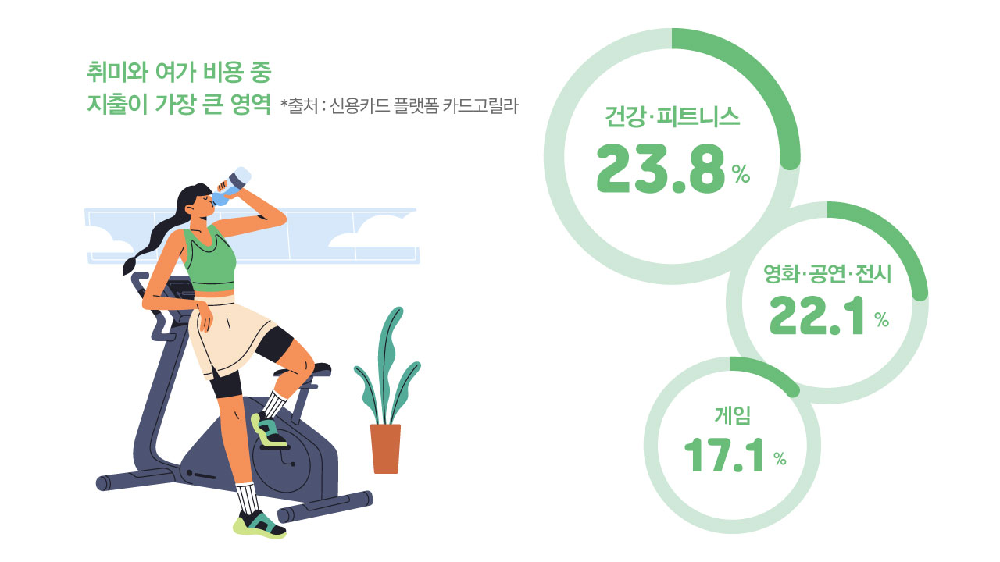
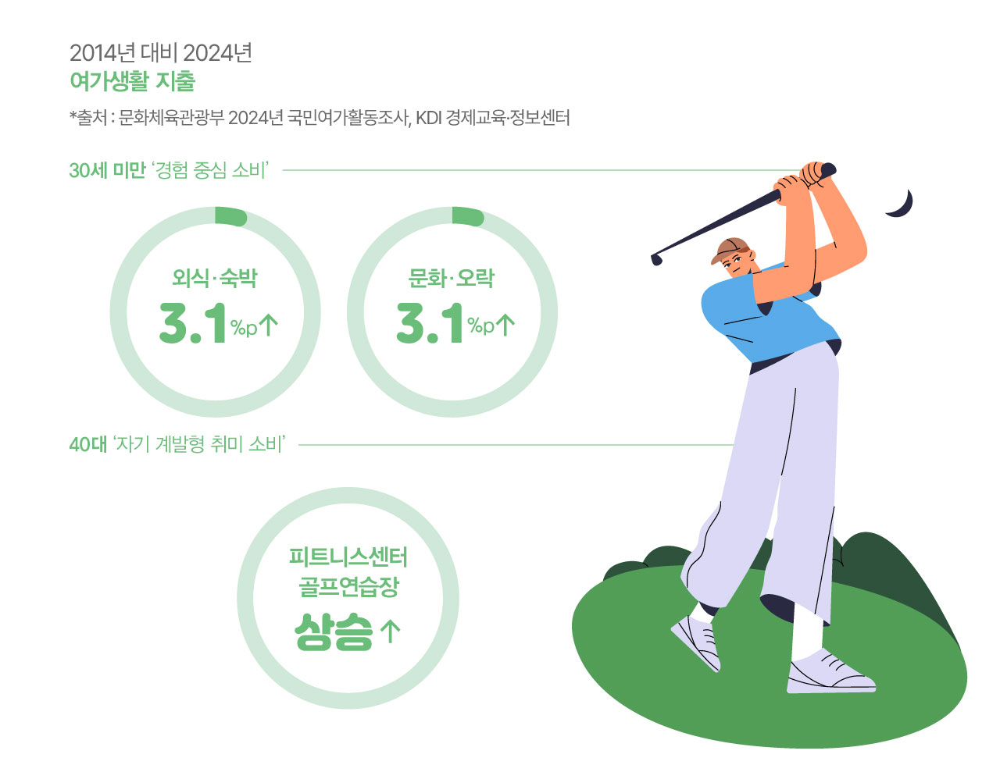
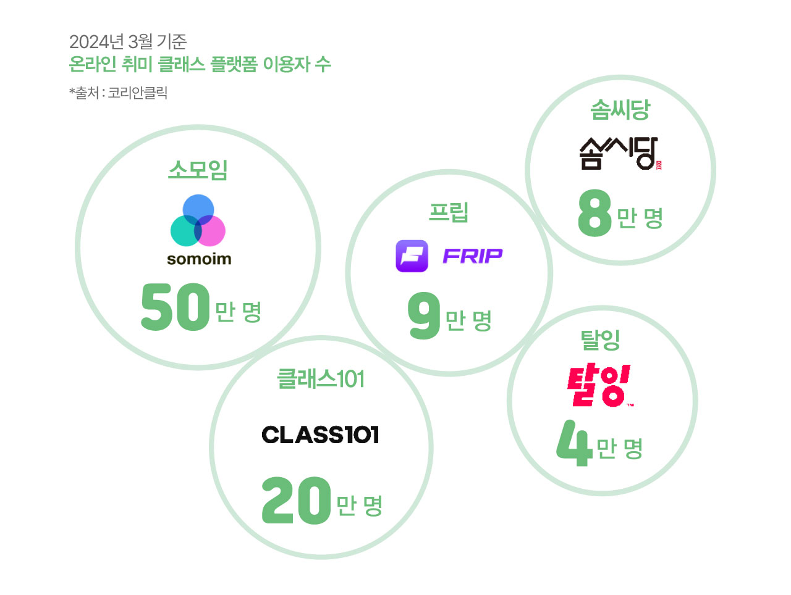
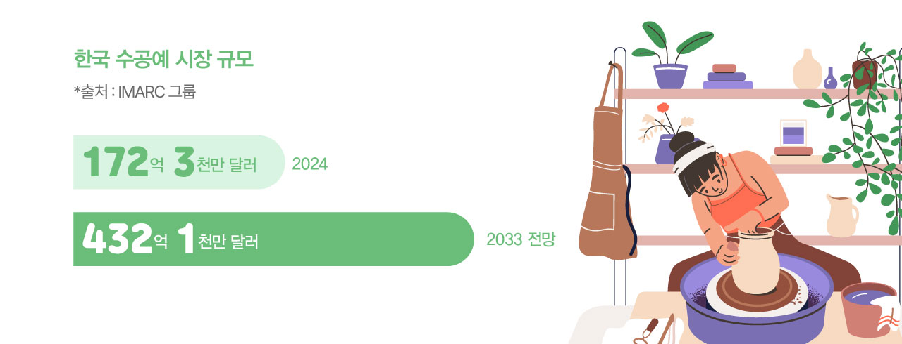

끊임없이 소비하고, 시청하고, 구매하던 우리가 변하고 있다. SNS 화면을 넘겨보며 남의 삶을 구경하는 대신, 직접 무언가를 만들어내는 ‘하비슈머(Hobbysumer)’로 진화 중이다. 취미를 뜻하는 ‘하비(Hobby)’와 소비자를 의미하는 ‘슈머(Consumer)’가 합쳐진 ‘하비슈머’는 무엇인가를 구매하는 데 그치지 않고, 취미를 통해 직접 창작하며 만족감을 얻는 새로운 유형의 소비자를 가리킨다. 이들이 시장을 주도하면서, 단순 소비 대신 직접 만들고 창작하는 생활 방식이 확산되고 있다.

고물가 상황에서도 취미 활동에 아낌없이 지출하는 소비 행태가 확산되면서 하비슈머가 소비 시장을 주도하고 있다. 신용카드 플랫폼 카드고릴라가 2023년 웹사이트 방문자 1,001명을 대상으로 실시한 설문조사에 따르면, 취미와 여가 비용 중 지출이 가장 큰 영역은 건강·피트니스(23.8%)였으며, 영화·공연·전시(22.1%), 게임(17.1%) 순으로 나타났다. 이는 하비슈머가 창작형 취미뿐만 아니라 자기계발 및 경험 중심의 활동에 적극적으로 투자하고 있음을 보여준다.

하비슈머는 이제 모든 연령대에서 나타나는 보편적 현상이 되었다. 2024년
문화체육관광부 조사 결과,
한국인의 여가생활 만족도는 61.6%를 기록하며 2016년 통계 조사 이래
가장 높은 수치를 달성했다. 한 사람이 1년 동안 즐기는 여가활동 종류도 평균 16.4개로
늘어나며 취미 생활이 더욱 다양해지고 있음을 보여준다.
특히 눈에 띄는 변화는 혼자서 취미를 즐기는 사람들이 크게 증가했다는
점이다. 혼자 여가 활동을 하는 비율이 54.9%로 절반을 넘어서며, 타인의
시선이나 일정 조율 없이 자신만의 속도로 취미를 즐기려는 경향이
뚜렷해졌다.
연령대별로 살펴보면,
30세 미만 젊은 층은 2014년 대비 2024년에 외식·숙박 지출과 문화·오락
지출이 각각 3.1%포인트씩 상승하며 경험 중심 소비를 주도하고 있다.
40대는 피트니스센터와 실내 골프연습장 등 자기 계발형 취미 소비를
늘리며 ‘나를 위한 투자’에 집중하는 모습이다. 흥미로운 점은 월평균 여가비용은 18만 7천 원으로 2023년보다
줄었지만, 만족도는 오히려 높아졌다는 사실이다. 온라인 콘텐츠 활용이
늘면서 더 적은 비용으로도 충분한 만족을 얻는 똑똑한 소비가 자리 잡고
있다.

트렌드모니터 조사에 따르면 88.8%의 사람들이 나만의 취미활동을 갖고 싶다고 응답했고, 원데이 클래스 수강 의향이 있다는 응답은 82.3%에 달했다. 실제로 온라인 취미 클래스 플랫폼도 빠르게 성장하고 있다. 각 플랫폼마다 성격은 조금씩 다르지만, 2024년 3월 기준 취미 플랫폼 앱 ‘소모임’이 50만 명으로 가장 많은 이용자를 기록했고, 온라인 클래스 전문 앱인 ‘클래스101’은 20만 명으로 2위에 올랐다. ‘프립’(9만 명), ‘솜씨당’(8만 명), ‘탈잉’(4만 명)도 활발히 이용되고 있다. 시간과 장소 제약 없이 원하는 취미를 배울 수 있는 온라인 클래스가 바쁜 현대인의 새로운 학습 방식으로 자리 잡고 있다.

대량 생산된 똑같은 물건이 아닌 나만의 것을 직접 만들고 싶어 하는
사람들이 늘면서 핸드메이드 시장이 폭발적으로 성장하고 있다. 자신의
취향을 반영한 물건을 가지고 싶다는 욕구, 하나의 취미를 깊이 파고들어
전문성을 키우려는 경향이 맞물린 결과다.
글로벌 시장조사 기관 IMARC 그룹에 따르면
2024년 한국 수공예 시장은 172억 3천만 달러(약 23조 원) 규모이며,
2033년까지 연평균 9.63% 성장해 432억 1천만 달러(약 58조 원)으로
확대될 전망이다. 세계 시장은 2024년 1,107억 달러(약 1,500조 원)에서 2032년
2,397억 달러(약 3,200조 원)으로 연평균 10.15% 성장할 것으로 예상된다.
핸드메이드 작품을 사고파는 온라인 플랫폼 ‘아이디어스’는 2023년 기준
누적 거래액 8,800억 원, 창작자 3만 6,000명, 앱 다운로드 1,650만 건을
기록했으며 2023년 4월부터 50개국에 진출해 한국 창작자들의 해외 판로를
열었다.